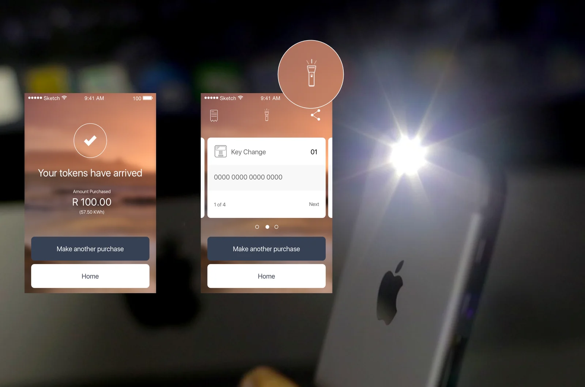
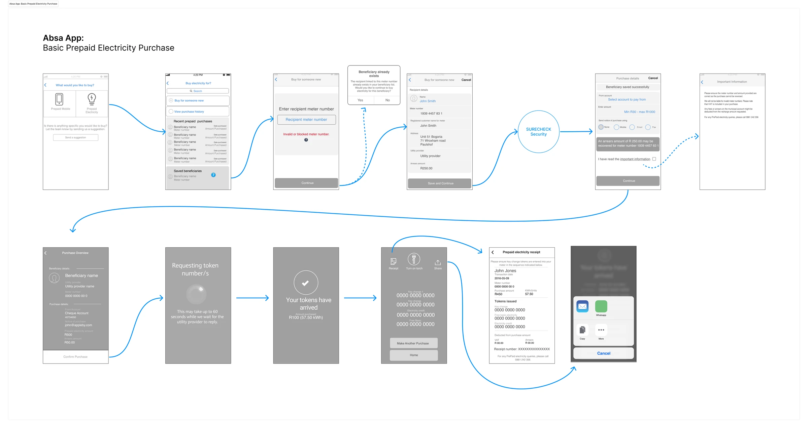
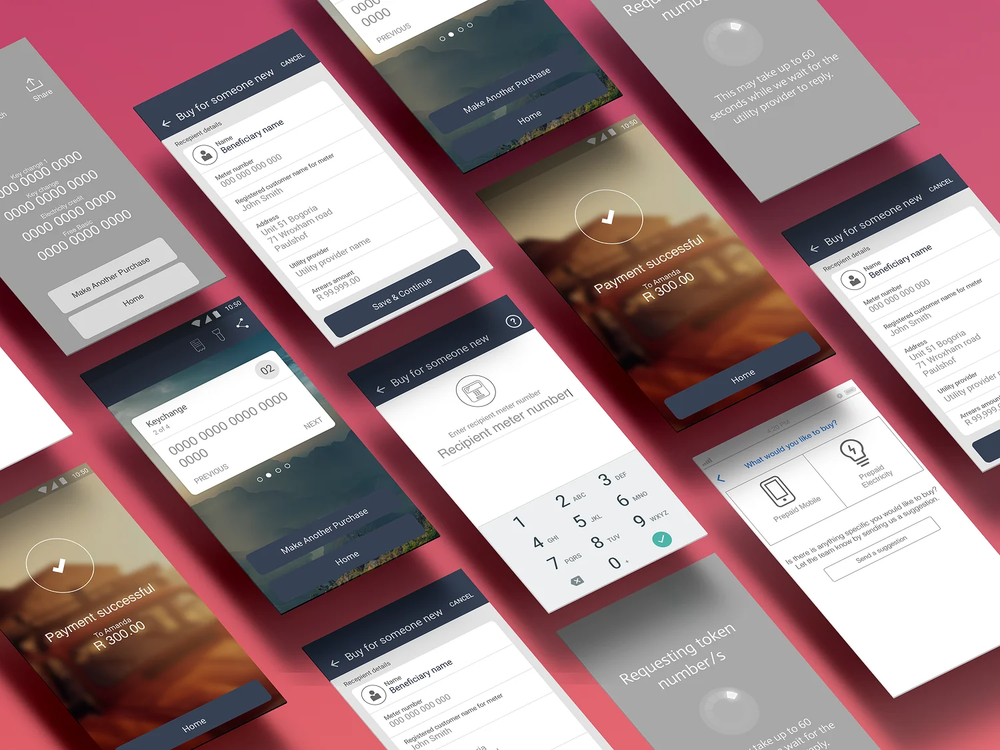
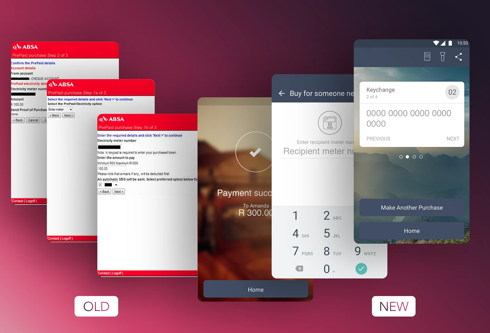

One switch
Part of the Absa App prepaid electricity case study. Absa, 2016. Lead UX Designer.
This is a small feature, a single switch, and it’s still one of my favourite examples of how I like to design. It didn’t come from looking at the screen. It came from picturing the room the customer was standing in.
When people actually buy electricity
Prepaid meters run out, and when they do the house goes dark and the stove stops. Someone has to buy more electricity right now. In our research people were usually stressed and in a hurry at this point, and it was often evening or bad weather. “Inconvenient hours” sat at the top of the pains we mapped.

From our journey mapping: inconvenient hours tops the list, ahead of the queue, cash, lost slips and the 20-digit token.
The app finished, the customer didn't
In one of our design workshops we walked through the last step in the customer’s shoes. You’ve paid and your token has arrived. Now you’re at the meter in the dark, with a 20-digit number on your screen and a keypad you can’t see. The app had done its job and the customer still couldn’t finish.
One switch, in the right place
We added an on/off torch switch to the token screen, the one screen people have open while they type the number in. It sits in the middle of the top bar, between Receipt and Share. One tap turns on the phone’s flashlight, so you can light the keypad and keep the token in view. No leaving the app to find the flashlight with 20 digits to remember.

The token screen with the torch switch in the top bar, and the phone's flashlight lighting the meter.
The switch was there from the greyscale stage. In the wireframes the token screen already had three actions: Receipt, Turn on torch and Share.

The greyscale flow. Near the end, the token screen carries "Turn on torch" between Receipt and Share.
It only works because the screen is calm
A light is no use if the screen is cluttered. We moved the token and the kWh to the top of the receipt and pushed the rest into a separate receipt view. When a purchase returns several tokens, like key-change tokens that must go in a set order, we show one at a time with a number (“2 of 4”) and Previous and Next. There’s one thing to read, and the light makes it easy to see where it goes.

The finished flow ends on a single numbered token card, with the torch above it.

Before and after: the earlier web form only noted that "a keypad is required". The new flow ends on the token itself, with the torch one tap away.
What it taught me
Most of the value in this project came from plain decisions, like saving meter numbers and keeping a purchase history. The torch is just the easiest one to remember. It came from the same habit, though: thinking about where someone is and how they feel, not only what they’re tapping. I try to ask that question early on every project.